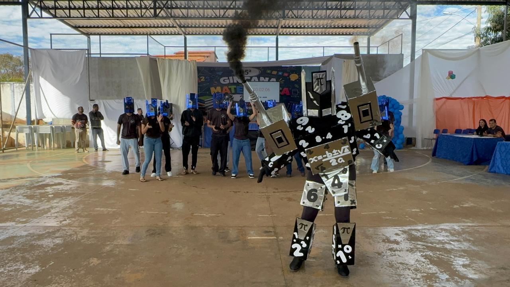
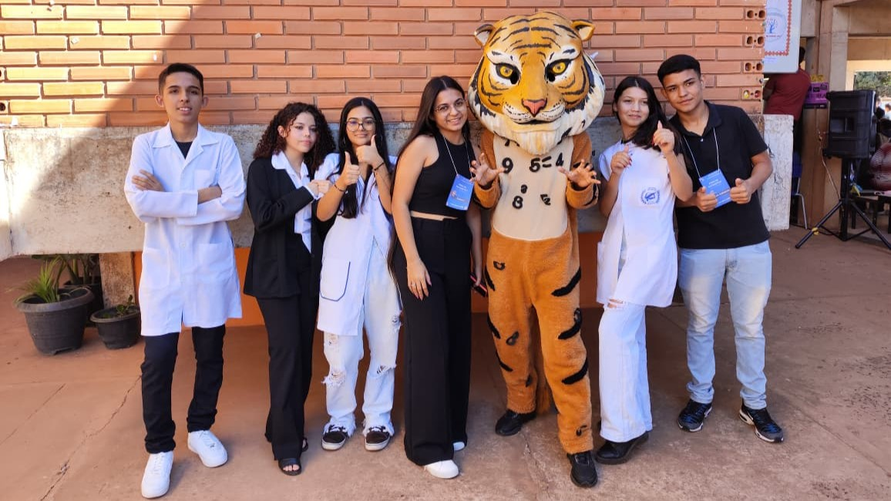
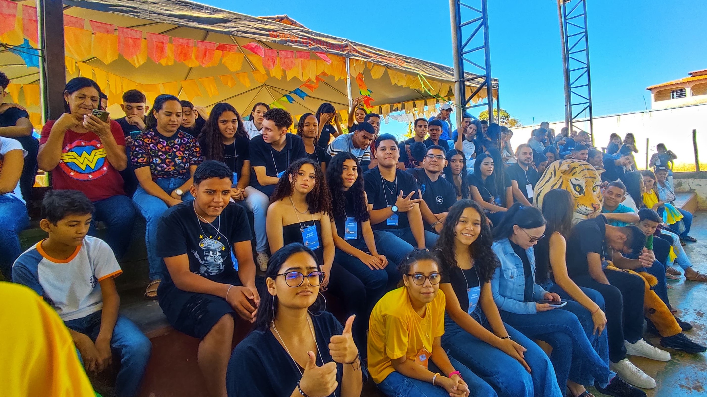
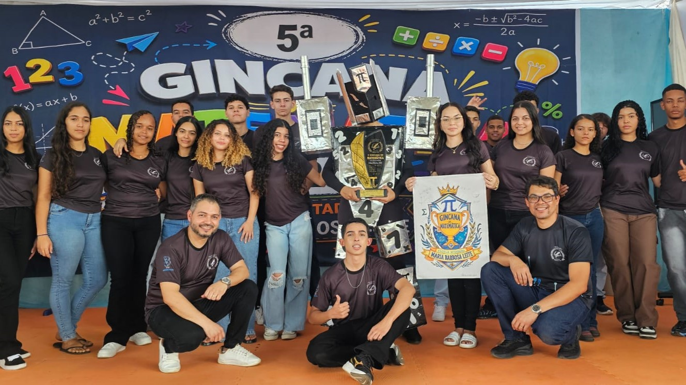
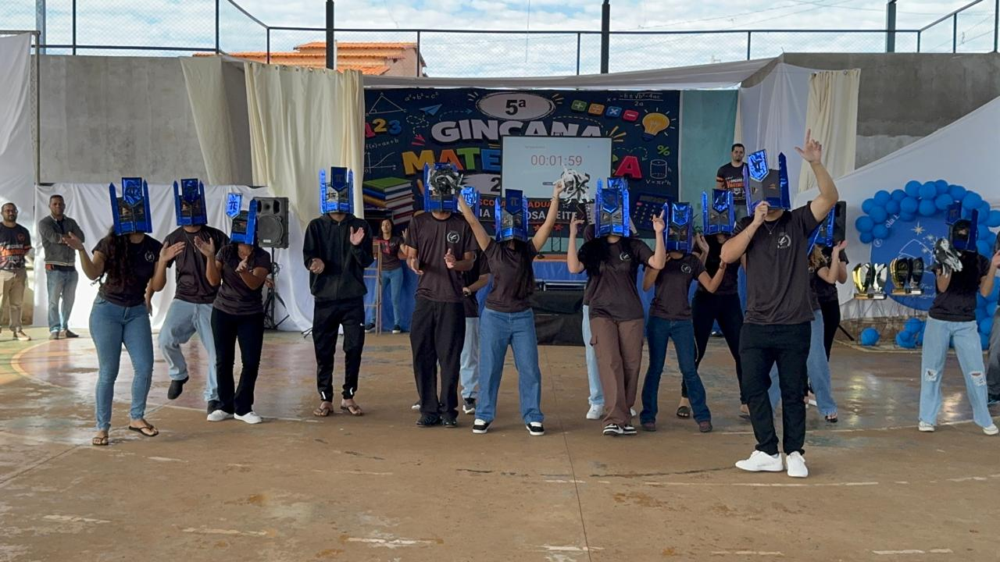

Preparação para a Gincana
A expectativa e a animação antes de começar uma experiência cheia de desafios.
Escola Estadual Maria Barbosa Leite
3º ANO • CURSO TÉCNICO EM INFORMÁTICA
COORDENAÇÃO PROF: Professor Kleber Moraes.
Um momento de aprendizado, diversão e trabalho em equipe que marcou a
trajetória dos alunos da Escola Estadual Maria Barbosa Leite.
Celebramos com orgulho a conquista do 1º e do 3º ano do Ensino Médio!
Nossa experiência
A Gincana de Matemática da Escola Estadual Maria Barbosa Leite foi uma experiência marcada por desafios, aprendizado e união. Os alunos tiveram a oportunidade de colocar seus conhecimentos em prática, desenvolver o raciocínio lógico e participar de atividades que estimularam a colaboração e a criatividade. Com entusiasmo e dedicação, as turmas participaram dessa experiência e celebraram uma conquista especial: Esses alunos no 1º e no 3º ano do Ensino Médio foram campeões da gincana. Um resultado que representa orgulho, participação e momentos inesquecíveis da nossa vida escolar.
Desafios Matemáticos Exercitamos o raciocínio lógico, a concentração e a capacidade de encontrar soluções.
União e Colaboração Compartilhamos ideias, colaboramos com os colegas e trabalhamos juntos para superar os desafios.
Conhecimento na Prática Transformamos os conteúdos aprendidos em sala de aula em uma experiência dinâmica e divertida.
Orgulho de Ser Campeão A conquista do 1º e no 3º ano do Ensino Médio tornou essa experiência ainda mais especial.
Confira os registros desse dia especial! Cada fotografia guarda momentos de participação, desafios, alegria e comemoração de uma conquista que ficará marcada na história dos alunos da Escola Estadual Maria Barbosa Leite.

A expectativa e a animação antes de começar uma experiência cheia de desafios.

Os alunos colocaram seus conhecimentos matemáticos à prova.

Cada atividade foi uma oportunidade de aprender e superar desafios.

A colaboração e o espírito de equipe fizeram parte dessa experiência.

A alegria de celebrar uma conquista construída com dedicação e participação.